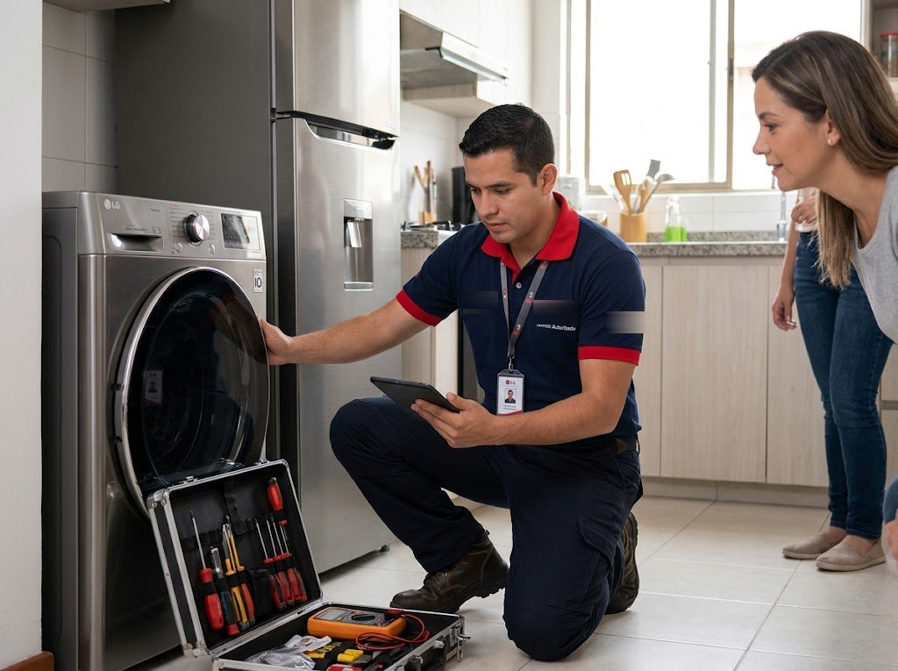

No enciende en secadora LG
Qué significa, cuál es la causa más probable y cuándo conviene llamar al técnico. Servicio técnico LG a domicilio en Panamá.

¿Por qué mi secadora LG presenta este problema?
Causa probable: Tomacorriente, botón de inicio, fusible térmico o tarjeta de control.
En Panamá el calor, la humedad y las variaciones de voltaje aceleran el desgaste de componentes de la secadora, por eso esta falla es frecuente en equipos con algunos años de uso.
Qué puedes revisar antes de llamar
Verifica el breaker (las eléctricas usan un breaker de 220 V). Si no es eso, avísanos.
Revisa también que el equipo esté bien conectado, nivelado y con el tomacorriente en buen estado. Si no estás seguro de algo, no desarmes el equipo: puedes empeorar la falla o hacerte daño.
¿Es urgente?
Urgente Si el síntoma es este, lo mejor es apagar y desconectar el equipo y escribirnos cuanto antes: seguir usándolo puede agravar el daño o la pérdida de alimentos.
Qué hacemos en la visita
- Revisamos el equipo en tu casa u oficina y confirmamos la causa de la falla.
- Te explicamos el problema, las opciones y el costo antes de empezar.
- Reparamos o reemplazamos la pieza necesaria y probamos el equipo.
- La reparación incluye garantía sobre la pieza y la mano de obra.
Causas posibles en detalle
No enciende es un síntoma que puede tener más de una causa en la secadora LG. Por eso el técnico no cambia piezas a ciegas: mide, descarta y confirma la falla antes de reparar. En este caso la causa más probable es: tomacorriente, botón de inicio, fusible térmico o tarjeta de control.
¿Reparar o reemplazar la secadora LG?
Si la falla es de una pieza accesible y el equipo está en buen estado general, reparar casi siempre conviene. Si el equipo es muy antiguo o el daño es costoso, te explicamos las opciones con honestidad para que decidas con la información completa.
Cómo prevenir esta falla
Una vez al año, pide una revisión de resistencias, sensores y rodillos. Además, protege el equipo de bajones de voltaje y evita sobrecargarlo.
Servicio técnico de secadoras LG en Ciudad de Panamá
Atendemos este tipo de falla a domicilio en San Francisco, Bella Vista, Obarrio, Costa del Este, Punta Pacífica, Betania, San Miguelito, Albrook, Arraiján, La Chorrera y más zonas. Escríbenos por WhatsApp con el modelo y la falla.
Guías relacionadas
Otras fallas de secadoras LG
Preguntas frecuentes
¿Cuánto cuesta reparar: no enciende?
Depende de la causa y de la pieza. Escríbenos por WhatsApp con el modelo y el síntoma; te confirmamos el costo de la visita antes de ir y el de la reparación antes de empezar.
¿Cuánto tarda la reparación?
Muchas fallas se resuelven en la misma visita. Si hace falta una pieza, te avisamos el plazo antes de empezar. Coordinamos visitas en 24 a 48 horas.
¿Atienden en mi zona de Panamá?
Damos servicio a domicilio en Ciudad de Panamá, San Miguelito y Panamá Oeste. Escríbenos con tu barrio y te confirmamos.
Servicio en tu zona
¿Tu secadora LG tiene esta falla?
Escríbenos por WhatsApp con el equipo, el modelo y la falla. Te confirmamos disponibilidad para tu zona en minutos.